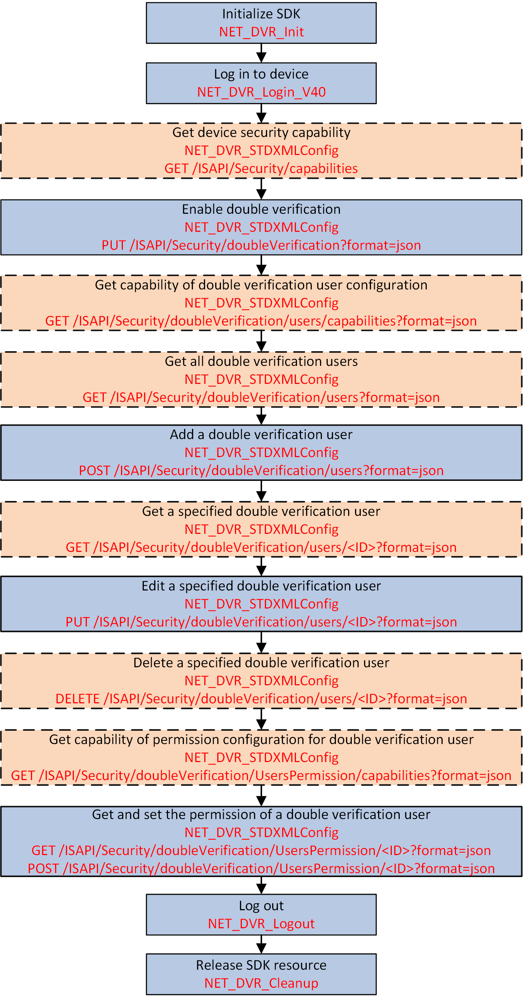

Double verification helps to protect the critical video files of NVR/DVR by
limiting playback and download. The basic concept is that two users should always be
required to start playback and download. For example, when a normal user A (operator or
guest) wants to play back the video of a channel which requires double verification, he/she
should ask a double verification user to enter the correct user name and password for double
verification.

Figure 1 Programming Flow of Configuring Double Verification
Note:
-
Only the admin user can configure double
verification.
-
For admin user, double verification is not required.
-
The double verification user name and password is only for double
verification, and cannot be used for login.
- Optional:
Call NET_DVR_STDXMLConfig to pass through the request URL:
GET
/ISAPI/Security/capabilities for getting the device security capability to check whether
the double verification function is supported.
The device security capability is returned by the output parameter pointer
lpOutBuffer in message XML_SecurityCap.
-
Call NET_DVR_STDXMLConfig to pass through the request URL:
PUT
/ISAPI/Security/doubleVerification?format=json for enabling the double verification.
- Optional:
Call NET_DVR_STDXMLConfig to pass through the request URL:
GET
/ISAPI/Security/doubleVerification/users/capabilities?format=json for getting the capability of double verification user
configuration.
-
Call NET_DVR_STDXMLConfig to pass through the request URL:
POST
/ISAPI/Security/doubleVerification/users?format=json for adding a double verification user.
The ID of added double verification user is returned in JSON_id.
-
Call NET_DVR_STDXMLConfig to pass through the request URL:
PUT
/ISAPI/Security/doubleVerification/users/<ID>?format=json for editing a specified double verification user.
- Optional:
Call NET_DVR_STDXMLConfig to pass through the request URL:
DELETE
/ISAPI/Security/doubleVerification/users/<ID>?format=json for deleting a specified double verification user.
- Optional:
Call NET_DVR_STDXMLConfig to pass through the request URL:
GET
/ISAPI/Security/doubleVerification/UsersPermission/capabilities?format=json for getting the capability of permission configuration for
double verification users.
-
Call NET_DVR_STDXMLConfig to pass through the request URL:
PUT
/ISAPI/Security/doubleVerification/UsersPermission/<ID>?format=json for setting the permission of a specified double
verification user.
Call NET_DVR_Logout
and NET_DVR_Cleanup
to log out off the device and release the resources.